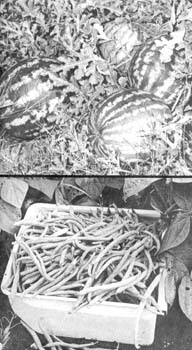

Watermelons ripening in the patch suggest a torrid summer day but these beauties were snapped in the Author's Nebraska garden in late October. Hybrid Dixie Queen and Crimson Sweet, planted in July, showed outstanding resistance to insect damage and disease. Green, wax and lima beans harvested in October after top foliage was damaged by frost are plumper, juicier, less stringy and noticeably more tender than summer beans.